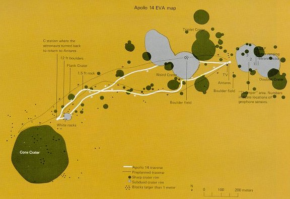
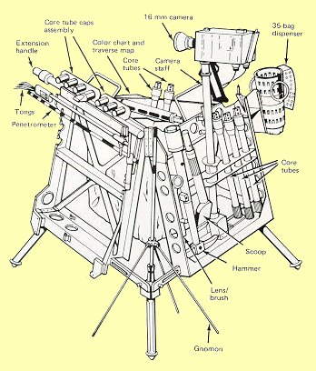

|  |
| The planned traverse route for the second EVA is shown by a fine black line an this map of the Apollo 14 site. The heavier white line is the traverse actually covered. The craters and boulders encountered are plotted, as are the locations of the emplaced experiments. Such maps are essential for an understanding of the sample sources and the experiment data. |
|  | The well-stocked tool rack at left, which fitted neatly on the rickshaw, was at least better than traipsing about carrying everything, including samples already collected. But it proved to be a drag in deep dust, easier to carry than to tow. The problem of doing on-the-spot lunar geologising in an efficient way awaited the electric Rover. |